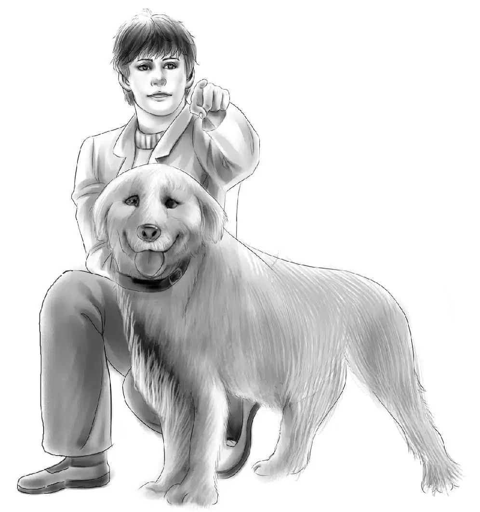
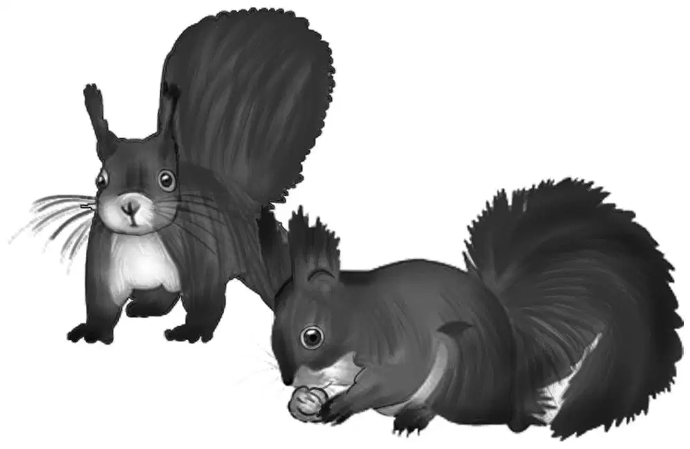
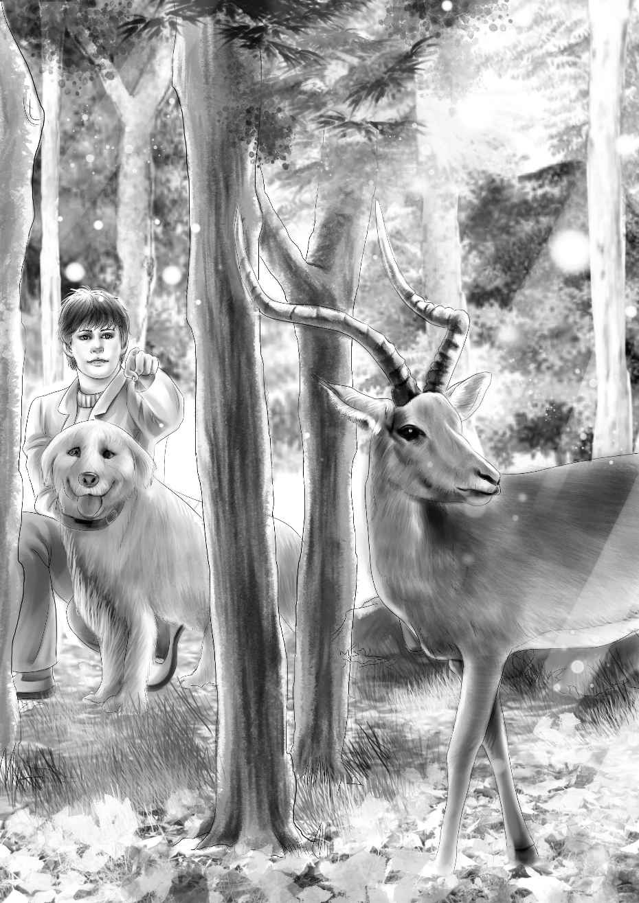
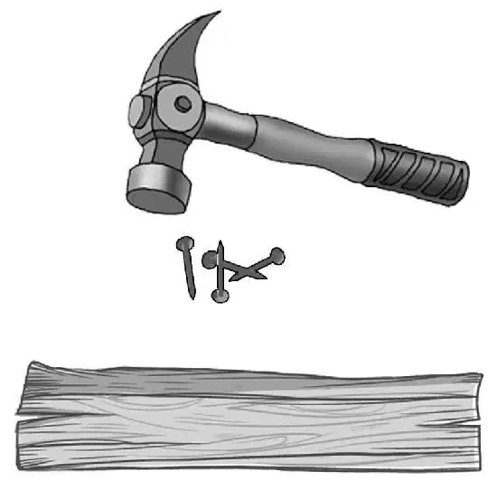

Attic Guests

奥登家的孩子们爬了起来，周围又黑又冷，窗外没有多少光亮透进来，就连壁炉里的火也熄得差不多了。
亨利抬头看了看棚顶，仔细听了听，断言道：“肯定是一只松鼠。”
“一只松鼠？”班尼说道，“听起来像是十几只呢！”
“哦，天哪！”杰西惊呼起来，“我听说，想把松鼠赶出房子，唯一的办法就是杀死它们。”
“咱们可不能这么做。”维莉赶忙说道。
“放心，咱们才不会呢！”亨利说，“不过，或许可以试着把它们吓跑。望望，你蹲下！班尼，给我拿把铁锹过来。”
班尼离壁炉最近，他拿起一把长柄铁锹递给了哥哥。亨利便用长长的锹柄敲打起天花板来。
噪音猛地停了下来，随后连一丝声响都没有了。可是，没过一会儿工夫，那声音又响了起来。望望一边叫，一边绕着屋子乱跑。亨利再次敲了敲，声音又停止了。
“这下好了。”亨利说，“想让这声音停下来倒不难，可我总不能整晚都站在这儿用铁锹柄不停地敲吧？”
“要不，咱们将就着睡吧，让松鼠们自己玩去。”杰西说。
不过亨利仍然站在那儿，打量着男孩卧室的天花板——棚顶是宽木板铺就的，没有抹泥灰。

“班尼，过来一下！”亨利叫了起来，“有点不对劲呢。为什么卧室有木板做的天花板，而客厅却没有天花板，上面直接就是屋顶——瞧，连木梁都看得见？”
班尼抬头看了看，松鼠们仍在上面疯窜，他说：“我想，小木屋刚开始修建的时候，卧室里应该也没有天花板，说不定是后来为了保暖才加上去的。”
“卧室上方的阁楼是完全封死的，”亨利说，“我没看见有暗门，小屋里也没有通往阁楼的楼梯。松鼠准是从屋顶钻进去的，那儿肯定有破洞。”
“我敢说，它们准是在上面搭了一个漂亮的小窝。”班尼猜测。
“明早我到屋顶上瞧瞧，看到底是什么情况。”亨利答道，“说不定咱们可以把松鼠吓跑，把洞口封住。你们现在还睡得着么？”
“只要望望不叫就行。”杰西说，“既然我们现在已经知道是怎么回事，也就不害怕了。”
望望摇了摇尾巴，抬头望着杰西，杰西安慰道：“没事的，不用叫了。”
让人惊奇的是，望望果真没有再叫了，就算松鼠的抓挠声不断，望望也始终一声不发。很快，大家都进入了梦乡，就连望望和那些松鼠也不例外。
清晨，孩子们穿好了衣服。吃早饭前，亨利就已经生好了火。
“咱们今天最好去趟商店，打听一下怎么解决那些松鼠的问题。”杰西说，“尼尔森先生肯定知道阁楼里有松鼠——他在这里住了三次，一定听到过。”
孩子们用最快的速度做好准备，背起了各自的背包，亨利锁上门，将钥匙揣在口袋里。
“别啦，松鼠们，不要再见了！”班尼说道。
天气十分晴好，比前一天还要明媚，天空中连一片云朵都没有。杰西说：“看来，这好天气持续不了多久了，爷爷说过，这叫暴雨前的宁静，风暴马上就会来了。”
“可是，看上去不像有风暴的样子呢。”班尼说。
“不，班尼，暴雨前的宁静就是这样的。好天气持续不了多久啦！不过不用担心，就算是一直下雨，咱们也照样可以过得开心。”
路程走了一半，亨利突然停了下来，他一把抓住望望的项圈，指了指前方，大家都朝他所指的方向望去。
那是一头野鹿！
这头健美的家伙正一动不动地站在那里，用褐色的眼睛温柔地望着这群陌生人。正在这时，望望突然一声吠叫，受惊的野鹿一纵身，跳过前方的一块大石头，跃过众人的头顶，消失不见了。
“跳得好高啊！”杰西惊叹道，“至少有十英尺高，要知道这还是上坡路呢！看，那儿还有一头鹿，看它跳得多高！”
“那是头母鹿，”亨利说，“它的角没有公鹿那么大。”

“可它跳得跟公鹿差不多高呢！”班尼说。
孩子们终于走到了商店，头一件事情就是把松鼠的入侵告诉了尼尔森先生。
“没错，我也听到过它们的动静。”他说，“曾有人想过药死它们，但那是没用的，还会有更多的松鼠钻进去。我觉得你们把屋顶上的破洞给堵起来才是最好的办法，不过，一定要先把所有的松鼠都赶出去，然后再补洞。”

“托马斯可以给你们拿几块木板，还有钉子和榔头。”尼尔森太太说，“没问题吧，托马斯？”
“当然没问题。”尼尔森先生说。
随后，杰西又告诉尼尔森太太自己要买的东西：“我们要给班尼买些汉堡和热狗，还要些花生酱……”
“我也想跟他们去小木屋，”帕奇说，“可以么，妈妈？”
“不行。”尼尔森太太摇了摇头，脸又一次红了，因为她听到帕奇说：“让我去吧，我保证什么都不找。”
托马斯·尼尔森尴尬地笑了几声，神色间透着一些不安，他解释道：“是这样的，小木屋是我爷爷多年前造的，帕奇多半把那儿当成自己的地盘了。”
“原来是这样。”杰西说，“没关系，让他跟我们去吧，不用担心。只是，他晚上要住在那里才行。”
“您知道屋子里的泉水是打哪儿来的么？”亨利向尼尔森先生问道。
“当然知道，那是从山上流下来的泉水，山泉离木屋不远，你们可以去找找，我记得它还有块老旧的标牌作指示。”
“好的，那我们走啦。”杰西说，“亨利，东西都拿齐了么？”
“嗯，拿了几块结实的木板，一把榔头，还有几根钉子。”
“我们很快会再来的。”说完，亨利离开了小店。
直到走得很远，小店已经消失在视野中时，杰西才说道：“刚才真是有点奇怪，不是么？”
“尼尔森全家都有点不对劲！”班尼叫道，“奇怪的是，他们人又很好。到底是怎么回事呢，亨利？”
“我也不知道。”亨利说，“我对托马斯·尼尔森倒是挺有好感，可他显然是在担心着什么。”
“有一点可以肯定！”班尼说，“要是他们真想隐瞒什么，是绝不会让咱们带上帕奇的。”
大家都笑了起来。
“哎哟，望望呢？”杰西叫了起来。
大伙儿四处望了望，没有看到狗狗的踪影。
“望望！”亨利扯开嗓门叫了起来，大家都仔细倾听着，却没有听到任何回应。亨利放下了手里的榔头、钉子和木板。
“它肯定不会跑远的。”杰西说着，又喊了起来，“望望！”
这时，孩子们听到了一丝微弱的呜咽声，便赶紧拔腿朝声音传来的方向跑去。
“我听见望望的声音了，可就是看不见它。”班尼叫道。
亨利朝几丛灌木跑了过去。“别怕，老弟，我来了。”听到望望的呜咽声又传了过来，他赶忙安慰道。
随即，他停下脚步，拨开灌丛，终于明白了望望为什么没有跟上来。
“是猎人的夹子！”亨利叫道，“望望的后爪被夹子夹住了。”
只见望望趴在地上，不停地挣扎着去舔后爪，看到杰西后，它立刻抬起头，摇起了短短的尾巴。
“握住它的爪子，杰西。”亨利说，“我把夹子掰开。”说着，他捡起一根粗硬的树枝，将夹子撬了开来。
不出一分钟，望望便恢复了自由，它后腿悬空，用另外三条腿蹦跳着。
“用钢夹是违法的！”亨利愤愤地说，“准是有人想捕狐狸，但没抓到，便把夹子扔在了这里。”
亨利拾起夹子，收了起来，对于在树林里放捕猎夹的做法，他十分反感，不过为了不让杰西和维莉担心，他并没说出来。他真希望这不是小木屋曾经的房客所为，更不希望树林里会出现陌生人，然而眼前的陷阱却是真实存在的。
杰西仔细察看着望望的爪子，好在伤得不算重。
孩子们又重新回到了小路上。“亨利，我很长时间没见你发这么大的火了。”班尼说。
“是啊，我很讨厌这种做法。”亨利说，“不知道尼尔森一家知不知道附近有捕猎夹。”说着，他拾起了木板、榔头和钉子。
一家人继续赶路，谁都没有再说话。快到小屋时，班尼在路旁发现了一个貌似标牌的东西，它破破烂烂的，上面画着一个箭头，写着“山泉”两个字。
“看啊！”班尼叫了起来，“真奇怪，之前咱们怎么没发现它？我们都从这里经过三次了。”
亨利停住了脚步：“可能是咱们每次都在想别的，没注意到。我想去找找那个山泉，反正就快到家了，而且也费不了多少时间。”
大家纷纷表示同意，除了望望——看到家人再次朝山上走去，它感到有些意外，它还以为要回家吃午饭了呢。即便如此，望望还是转过身，顺从地跟在杰西身旁一路小跑。这一次，它的后爪没有悬在空中了。
大家找到一条通往山顶的小径，但极其难走。亨利和班尼此时并不知道，他们俩现在想的是同一件事，那就是——这山泉兴许跟尼尔森一家要找的东西有关。
“我想应该很少有人到这里看山泉。”维莉说，“这路太难走了。”
维莉心里有些隐隐的不安，或许是因为这条路看起来太荒凉了。
“我看到泉眼啦！”班尼说道，“瞧见那个木盖没有？下面肯定就是山泉。”
木盖大概四码见方，亨利和班尼一把将它掀了起来。
“这个好！”亨利说，“盖子能立着放。”
孩子们凑上前去，低头看了看，只见井壁是用平坦的石头铺就，山泉水质清澈，大约有两尺深。
这就是一股普通的泉水，根本没有任何神秘可言。
“这里的山泉是永远不会结冰的。”亨利说。
“为什么？”班尼问道，“你怎么知道？”
“你瞧，班尼。”亨利说，“这活泉水不断穿流，很可能是从十英尺深的地泉里涌出来的。”
正在孩子们转身准备打道回府时，大雨突然倾盆而下，大家开始拔腿奔跑起来。
“这些木板都被淋湿了！”亨利边跑边喊。
“看来今天是没办法修屋顶了。”班尼叫道。
“真没想到会下雨啊！”维莉说。
“果然是暴风雨前的宁静啊！”班尼叫道，“快跑，亨利，快开门，我的头发湿透了。”
孩子们终于安全地回到了小屋里，亨利向火堆里又添了些柴，屋子里很快变得暖和温馨起来。孩子们围坐在火堆旁，用木棍烤起了热狗。
“帮我拿一下棍子好吗？”班尼对维莉说，“我去把收音机拿来，说不定能听到天气预报呢。”
果然，热狗一烤好，大家就听班尼宣布道：“天气预报开始啦！”
“夜间有雨，明天白天，晴。”收音机里播送道，“晴好天气会持续。”
“看来，咱们不用像诺亚一样，整整40个日夜都得躲在方舟上（诺亚方舟的传说，来自于《圣经》故事，因为人类的贪婪残忍，让上帝兴起了毁灭世界的念头，他让善人诺亚一家躲在方舟上避过这一劫，末日的大雨整整下了40个日夜） 。”班尼说，“对我来说，一个下午和一个晚上的雨已经够受了。”